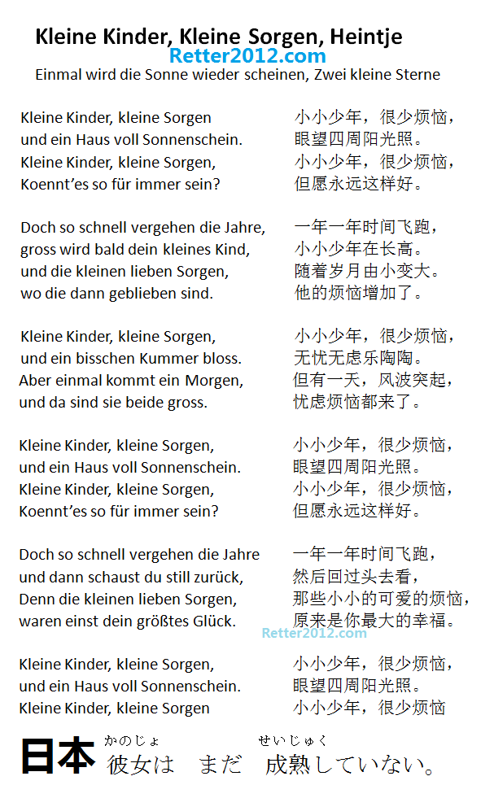

返回主页
中国崛起之：成长的烦恼

1970年西德电影《英俊少年》中的插曲德文名字《小小少年，很少烦恼》（勘校版），由荷兰童星海因切（Heintje）演唱。《两颗小星星》（Zwei kleine Sterne）也充满活力，生机勃发。德意志精神和力量充分展现在音乐里面,比如瓦格纳（Wagner）。
中国享受着返老还童的烦恼；而日本这妞显然还不够成熟。
China wants to be a great power. But CCTV simply can't do the job.
防空识别区
国家安全委员会
日本防空识别区
中国防空识别区
THE SOLDIER'S FAITH
龙的诞生（Dragon）
罗马的过度扩张
太平洋战争
日本偷袭珍珠港路线图
三大海战：偷袭珍珠港
三大海战：珊瑚海海战
三大海战：中途岛决战
日本翻译错了二战最后通牒
核导弹攻击
version:1.0; jobnet@188.com © retter2012.com